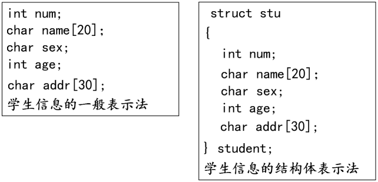

<!DOCTYPE lake>
<h1 data-lake-id="RQywD" id="RQywD"><span data-lake-id="u3b39f0a9" id="u3b39f0a9">概述</span></h1><ul list="u3c53cc52"><li data-lake-id="u68b84799" fid="uc0dcb85b" id="u68b84799"><span data-lake-id="uc7ad85d3" id="uc7ad85d3">有时我们需要将不同类型的数据组合成一个有机的整体，如：一个学生有学号/姓名/性别/年龄/地址等属性</span></li></ul><ul data-lake-indent="1" list="u3c53cc52"><li data-lake-id="ub530ff24" fid="uc0dcb85b" id="ub530ff24"><span data-lake-id="u533399f6" id="u533399f6">这时候可通过结构体实现</span></li></ul><ul list="u3c53cc52" start="2"><li data-lake-id="u8086c457" fid="uc0dcb85b" id="u8086c457"><span data-lake-id="u6932d2ac" id="u6932d2ac">结构体(struct)可以理解为用户自定义的特殊的复合的“数据类型”</span></li></ul><p data-lake-id="uc7f539e7" id="uc7f539e7" style="text-indent: 2em"></p><p data-lake-id="ua11163aa" id="ua11163aa" style="text-indent: 2em"><br/></p><h1 data-lake-id="Qlcfh" id="Qlcfh"><span data-lake-id="u8aa36c4e" id="u8aa36c4e">结构体变量的定义和初始化</span></h1><ul list="ucf56eb0e"><li data-lake-id="ua95404f8" fid="u7909c10f" id="ua95404f8"><span data-lake-id="u7f735181" id="u7f735181">定义结构体变量的方式：</span></li></ul><ul data-lake-indent="1" list="ucf56eb0e"><li data-lake-id="ub80840fc" fid="u7909c10f" id="ub80840fc"><span data-lake-id="u3ef6fba8" id="u3ef6fba8" style="color: rgb(0,0,0)">先声明结构体类型再定义变量名</span></li><li data-lake-id="ue409045e" fid="u7909c10f" id="ue409045e"><span data-lake-id="u571d4692" id="u571d4692">在声明类型的同时定义变量</span></li></ul><ul list="ucf56eb0e" start="2"><li data-lake-id="u25ebcb63" fid="u7909c10f" id="u25ebcb63"><span data-lake-id="u0a560d4e" id="u0a560d4e">语法格式：</span></li></ul><span class="yuque-card-unsupported">[codeblock]</span><ul list="u209110d9"><li data-lake-id="u377aa717" fid="uf1247628" id="u377aa717"><span data-lake-id="u5bac2088" id="u5bac2088">示例代码：</span></li></ul><span class="yuque-card-unsupported">[codeblock]</span><h1 data-lake-id="VPnpX" id="VPnpX"><span class="lake-fontsize-12" data-lake-id="ud636a293" id="ud636a293">结构体成员的使用</span></h1><ul list="udae03ec2"><li data-lake-id="ubca72131" fid="u72602b94" id="ubca72131"><span data-lake-id="u34e4cb2d" id="u34e4cb2d">如果是结构体变量，通过 . 操作成员</span></li><li data-lake-id="u38f9ec34" fid="u72602b94" id="u38f9ec34"><span data-lake-id="u43cbe920" id="u43cbe920">如果是结构体指针变量，通过 -&gt; 操作成员</span></li></ul><span class="yuque-card-unsupported">[codeblock]</span><p data-lake-id="u40f229c6" id="u40f229c6"><span data-lake-id="u92f15677" id="u92f15677">​</span><br/></p><h1 data-lake-id="Mu2jN" id="Mu2jN"><span data-lake-id="ud9fc1684" id="ud9fc1684">结构体做函数参数</span></h1><h2 data-lake-id="xTd01" id="xTd01"><span data-lake-id="u75cb01f8" id="u75cb01f8">结构体值传参</span></h2><ul list="u67e1f3cb"><li data-lake-id="uf6c17f08" fid="u37864772" id="uf6c17f08"><span data-lake-id="u373b7031" id="u373b7031">传值是指将参数的值拷贝一份传递给函数，函数内部对该参数的修改不会影响到原来的变量</span></li></ul><p data-lake-id="u42668bf3" id="u42668bf3"><br/></p><p data-lake-id="ua4a5c43b" id="ua4a5c43b"><span data-lake-id="u078f7900" id="u078f7900">示例代码：</span></p><span class="yuque-card-unsupported">[codeblock]</span><p data-lake-id="ubf5f2aab" id="ubf5f2aab"><span data-lake-id="uf1eb3c33" id="uf1eb3c33">运行结果：</span></p><span class="yuque-card-unsupported">[codeblock]</span><p data-lake-id="u47456f50" id="u47456f50"><br/></p><h2 data-lake-id="flnPc" id="flnPc"><span data-lake-id="u3ec54dff" id="u3ec54dff">结构体地址传参</span></h2><ul list="ude9b62ff"><li data-lake-id="u2055bf4e" fid="u6e85c53d" id="u2055bf4e"><span data-lake-id="uf77d7c5c" id="uf77d7c5c">传址是指将参数的地址传递给函数，函数内部可以通过该地址来访问原变量，并对其进行修改。</span></li></ul><p data-lake-id="u6014a4f9" id="u6014a4f9"><span data-lake-id="ueae9c5c7" id="ueae9c5c7">示例代码：</span></p><span class="yuque-card-unsupported">[codeblock]</span><p data-lake-id="u4b31d32c" id="u4b31d32c"><span data-lake-id="u947250c4" id="u947250c4">运行结果：</span></p><span class="yuque-card-unsupported">[codeblock]</span>